Section 1.6 Volumes
¶Another simple 1 Well — arguably the idea isn't too complicated and is a continuation of the idea used to compute areas in the previous section. In practice this can be quite tricky as we shall see. application of integration is computing volumes. We use the same strategy as we used to express areas of regions in two dimensions as integrals — approximate the region by a union of small, simple pieces whose volume we can compute and then then take the limit as the “piece size” tends to zero.
In many cases this will lead to “multivariable integrals” that are beyond our present scope 2 Typically such integrals (and more) are covered in a third calculus course.. But there are some special cases in which this leads to integrals that we can handle. Here are some examples.
Find the volume of the circular cone of height \(h\) and radius \(r\text{.}\)
Solution: Here is a sketch of the cone.
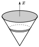
We have called the vertical axis \(x\text{,}\) just so that we end up with a “\(\dee{x}\)” integral.
-
In what follows we will slice the cone into thin horizontal “pancakes”. In order to approximate the volume of those slices, we need to know the radius of the cone at a height \(x\) above its point. Consider the cross sections shown in the following figure.
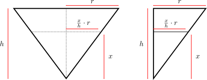At full height \(h\text{,}\) the cone has radius \(r\text{.}\) If we cut the cone at height \(x\text{,}\) then by similar triangles (see the figure on the right) the radius will be \(\frac{x}{h}\cdot r\text{.}\)
-
Now think of cutting the cone into \(n\) thin horizontal “pancakes”. Each such pancake is approximately a squat cylinder of height \(\De x=\frac{h}{n}\text{.}\) This is very similar to how we approximated the area under a curve by \(n\) tall thin rectangles. Just as we approximated the area under the curve by summing these rectangles, we can approximate the volume of the cone by summing the volumes of these cylinders. Here is a side view of the cone and one of the cylinders.
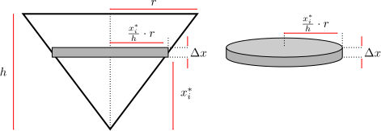 -
We follow the method we used in Example 1.5.1, except that our slices are now pancakes instead of rectangles.
- Pick a natural number \(n\) (that we will later send to infinity), then
- subdivide the cone into \(n\) thin pancakes, each of width \(\De x=\frac{h}{n}\text{.}\)
- For each \(i=1,2,\cdots,n\text{,}\) pancake number \(i\) runs from \(x=x_{i-1}=(i-1)\cdot\De x\) to \(x=x_i=i\cdot\De x\text{,}\) and we approximate its volume by the volume of a squat cone. We pick a number \(x_i^*\) between \(x_{i-1}\) and \(x_i\) and approximate the pancake by a cylinder of height \(\De x\) and radius \(\frac{x_i^*}{h}r\text{.}\)
- Thus the volume of pancake \(i\) is approximately \(\pi \left( \frac{x_i^*}{h}r\right)^2 \De x\) (as shown in the figure above).
- So the Riemann sum approximation of the volume is\begin{align*} \text{Volume} &\approx \sum_{i=1}^n \pi \left( \frac{x_i^*}{h}r\right)^2 \De x \end{align*}
- By taking the limit as \(n \to \infty\) (i.e. taking the limit as the thickness of the pancakes goes to zero), we convert the Riemann sum into a definite integral (see Definition 1.1.9) and at the same time our approximation of the volume becomes the exact volume:\begin{gather*} \int_0^h \pi \Big(\frac{x}{h}r\Big)^2\dee{x} \end{gather*}
Our life 3 At least the bits of it involving integrals. would be easier if we could avoid all this formal work with Riemann sums every time we encounter a new volume. So before we compute the above integral, let us redo the above calculation in a less formal manner.
-
Start again from the picture of the cone
and think of slicing it into thin pancakes, each of width \(\dee{x}\text{.}\)
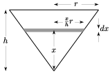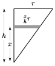 -
The pancake at height \(x\) above the point of the cone (which is the fraction \(\frac{x}{h}\) of the total height of the cone) has
- radius \(\frac{x}{h}\cdot r\) (the fraction \(\frac{x}{h}\) of the full radius, \(r\)) and so
- cross-sectional area \(\pi \big(\frac{x}{h}r\big)^2\text{,}\)
- thickness \(\dee{x}\) — we have done something a little sneaky here, see the discussion below.
- volume \(\pi \big(\frac{x}{h}r\big)^2\dee{x}\)
As \(x\) runs from \(0\) to \(h\text{,}\) the total volume is
\begin{align*} \int_0^h \pi \Big(\frac{x}{h}r\Big)^2\dee{x} &=\frac{\pi r^2}{h^2}\int_0^h x^2\dee{x}\\ &=\frac{\pi r^2}{h^2} \bigg[\frac{x^3}{3}\bigg]_0^h\\ &=\frac{1}{3}\pi r^2 h \end{align*}
In this second computation we are using a time-saving trick. As we saw in the formal computation above, what we really need to do is pick a natural number \(n\text{,}\) slice the cone into \(n\) pancakes each of thickness \(\De x = \frac{h}{n}\) and then take the limit as \(n \to \infty\text{.}\) This led to the Riemann sum
\begin{align*}
\sum_{i=1}^n \pi \left( \frac{x_i^*}{h} r \right)^2 \De x && \text{which becomes}
\int_0^h \pi \left( \frac{x}{h} r \right)^2 \dee{x}
\end{align*}
So knowing that we will replace
\begin{align*}
\sum_{i=1}^n &\longrightarrow \int_0^h\\
x_i^* &\longrightarrow x\\
\De x &\longrightarrow \dee{x}
\end{align*}
when we take the limit, we have just skipped the intermediate steps. While this is not entirely rigorous, it can be made so, and does save us a lot of algebra.
Example 1.6.2 Sphere
Find the volume of the sphere of radius \(r\text{.}\)
Solution: We'll find the volume of the part of the sphere in the first octant 4 The first octant is the set of all points \((x,y,z)\) with \(x\ge 0\text{,}\) \(y\ge 0\) and \(z\ge 0\text{.}\), sketched below. Then we'll multiply by \(8\text{.}\)
-
To compute the volume,
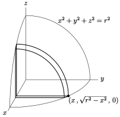we slice it up into thin vertical “pancakes” (just as we did in the previous example).
-
Each pancake is one quarter of a thin circular disk. The pancake a distance \(x\) from the \(yz\)-plane is shown in the sketch above. The radius of that pancake is the distance from the dot shown in the figure to the \(x\)-axis, i.e. the \(y\)-coordinate of the dot. To get the coordinates of the dot, observe that
- it lies the \(xy\)-plane, and so has \(z\)-coordinate zero, and that
- it also lies on the sphere, so that its coordinates obey \(x^2+y^2+z^2=r^2\text{.}\) Since \(z=0\) and \(y \gt 0\text{,}\) \(y=\sqrt{r^2-x^2}\text{.}\)
-
So the pancake at distance \(x\) from the \(yz\)-plane has
- thickness 5 Yet again what we really do is pick a natural number \(n\text{,}\) slice the octant of the sphere into \(n\) pancakes each of thickness \(\De x=\frac{r}{n}\) and then take the limit \(n\rightarrow\infty\text{.}\) In the integral \(\De x\) is replaced by \(\dee{x}\text{.}\) Knowing that this is what is going to happen, we again just skip a few steps. \(\dee{x}\) and
- radius \(\sqrt{r^2-x^2}\)
- cross-sectional area \(\frac{1}{4}\pi \big(\sqrt{r^2-x^2}\,\big)^2\) and hence
- volume \(\frac{\pi}{4} \big(r^2-x^2\big)\dee{x}\)
- As \(x\) runs from \(0\) to \(r\text{,}\) the total volume of the part of the sphere in the first octant is\begin{gather*} \int_0^r \frac{\pi}{4} \big(r^2-x^2\big)\dee{x} =\frac{\pi}{4}\bigg[r^2x-\frac{x^3}{3}\bigg]_0^r =\frac{1}{6}\pi r^3 \end{gather*}and the total volume of the whole sphere is eight times that, which is \(\frac{4}{3}\pi r^3\text{,}\) as expected.
Example 1.6.3 Revolving a region
The region between the lines \(y=3\text{,}\) \(y=5\text{,}\) \(x=0\) and \(x=4\) is rotated around the line \(y=2\text{.}\) Find the volume of the region swept out.
Solution: As with most of these problems, we should start by sketching the problem.
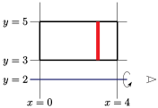
- Consider the region and slice it into thin vertical strips of width \(\dee{x}\text{.}\)
-
Now we are to rotate this region about the line \(y=2\text{.}\) Imagine looking straight down the axis of rotation, \(y=2\text{,}\) end on. The symbol in the figure above just to the right of the end the line \(y=2\) is supposed to represent your eye 6 Okay okay… We missed the pupil. I'm sure there is a pun in there somewhere.. Here is what you see as the rotation takes place.
-
Upon rotation about the line \(y=2\) our strip sweeps out a “washer”
- whose cross-section is a disk of radius \(5-2=3\) from which a disk of radius \(3-2=1\) has been removed so that it has a
- cross-sectional area of \(\pi 3^2 -\pi 1^2 = 8\pi\) and a
- thickness \(\dee{x}\) and hence a
- volume \(8\pi\,\dee{x}\text{.}\)
- As our leftmost strip is at \(x=0\) and our rightmost strip is at \(x=4\text{,}\) the total\begin{align*} \text{Volume} &= \int _0^4 8\pi\,\dee{x} =(8\pi)(4) =32\pi \end{align*}
Notice that we could also reach this answer by writing the volume as the difference of two cylinders.
- The outer cylinder has radius \((5-2)\) and length 4. This has volume\begin{align*} V_{outer} &= \pi r^2 \ell = \pi \cdot 3^2 \cdot 4 = 36\pi. \end{align*}
- The inner cylinder has radius \((3-2)\) and length 4. This has volume\begin{align*} V_{inner} &= \pi r^2 \ell = \pi \cdot 1^2 \cdot 4 = 4\pi. \end{align*}
- The volume we want is the difference of these two, namely\begin{align*} V &= V_{outer} - V_{inner} = 32\pi. \end{align*}
Let us turn up the difficulty a little on this last example.
Example 1.6.4 Revolving again
The region between the curve \(y=\sqrt{x}\text{,}\) and the lines \(y=0\text{,}\) \(x=0\) and \(x=4\) is rotated around the line \(y=0\text{.}\) Find the volume of the region swept out.
Solution: We can approach this in much the same way as the previous example.
-
Consider the region and cut it into thin vertical strips of width \(\dee{x}\text{.}\)
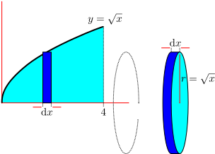 -
When we rotate the region about the line \(y=0\text{,}\) each strip sweeps out a thin pancake
- whose cross-section is a disk of radius \(\sqrt{x}\) with a
- cross-sectional area of \(\pi (\sqrt{x})^2 = \pi x\) and a
- thickness \(\dee{x}\) and hence a
- volume \(\pi x \dee{x}\text{.}\)
- As our leftmost strip is at \(x=0\) and our rightmost strip is at \(x=4\text{,}\) the total\begin{align*} \text{Volume} &= \int _0^4 \pi x \dee{x} =\left[\frac{\pi}{2}x^2 \right]_0^4 =8\pi \end{align*}
In the last example we considered rotating a region around the \(x\)-axis. Let us do the same but rotating around the \(y\)-axis.
Example 1.6.5 Revolving yet again
The region between the curve \(y=\sqrt{x}\text{,}\) and the lines \(y=0\text{,}\) \(x=0\) and \(x=4\) is rotated around the line \(x=0\text{.}\) Find the volume of the region swept out.
Solution:
- We will cut the region into horizontal slices, so we should write \(x\) as a function of \(y\text{.}\) That is, the region is bounded by \(x=y^2\text{,}\) \(x=4\text{,}\) \(y=0\) and \(y=2\text{.}\)
-
Now slice the region into thin horizontal strips of width \(\dee{y}\text{.}\)
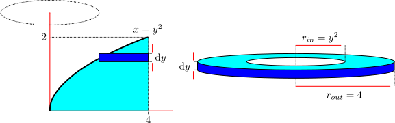 -
When we rotate the region about the line \(x=0\text{,}\) each strip sweeps out a thin washer
- whose inner radius is \(y^2\) and outer radius is \(4\text{,}\) and
- thickness is \(\dee{y}\) and hence
- has volume \(\pi(r_{out}^2 - r_{in}^2)\dee{y} = \pi(16-y^4)\dee{y}\text{.}\)
- As our bottommost strip is at \(y=0\) and our topmost strip is at \(y=2\text{,}\) the total\begin{align*} \text{Volume} &= \int _0^2 \pi(16-y^4) \dee{y} =\left[16\pi y - \frac{\pi}{5}y^5 \right]_0^2 = 32\pi - \frac{32\pi}{5} = \frac{128\pi}{5}. \end{align*}
There is another way 7 The method is not a core part of the course and should be considered optional. to do this one which we show at the end of this section.
Example 1.6.6 Pyramid
Find the volume of the pyramid which has height \(h\) and whose base is a square of side \(b\text{.}\)
Solution: Here is a sketch of the part of the pyramid that is in the first octant; we display only this portion to make the diagrams simpler.
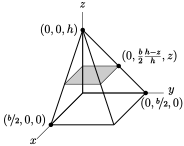
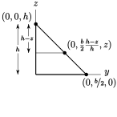
Note that this diagram shows only 1 quarter of the whole pyramid.
-
To compute its volume, we slice it up into thin horizontal “square pancakes”. A typical pancake also appears in the sketch above.
- The pancake at height \(z\) is the fraction \(\frac{h-z}{h}\) of the distance from the peak of the pyramid to its base.
- So the full pancake 8 Note that this is the full pancake, not just the part in the first octant. at height \(z\) is a square of side \(\frac{h-z}{h}b\text{.}\) As a check, note that when \(z=h\) the pancake has side \(\frac{h-h}{h}b=0\text{,}\) and when \(z=0\) the pancake has side \(\frac{h-0}{h}b=b\text{.}\)
- So the pancake has cross-sectional area \(\big(\frac{h-z}{h}b\big)^2\) and thickness 9 We are again using our Riemann sum avoiding trick. \(\dee{z}\) and hence
- volume \(\big(\frac{h-z}{h}b\big)^2\dee{z}\text{.}\)
- The volume of the whole pyramid (not just the part of the pyramid in the first octant) is\begin{align*} \int_0^h \Big(\frac{h-z}{h}b\Big)^2\dee{z} &=\frac{b^2}{h^2} \int_0^h (h-z)^2\dee{z}\\ \end{align*}
Now use the substitution rule with \(t=(h-z), \dee{z}\to-\dee{t}\)
\begin{align*} &=\frac{b^2}{h^2} \int_h^0 -t^2\dee{t}\\ &=-\frac{b^2}{h^2}\bigg[\frac{t^3}{3}\bigg]_h^0\\ &=-\frac{b^2}{h^2}\bigg[-\frac{h^3}{3}\bigg]\\ &=\frac{1}{3} b^2h \end{align*}
Let's ramp up the difficulty a little.
Example 1.6.7 Napkin Ring
Suppose you make two napkin rings 10 Handy things to have (when combined with cloth napkins) if your parents are coming to dinner and you want to convince them that you are “taking care of yourself”. by drilling holes with different diameters through two wooden balls. One ball has radius \(r\) and the other radius \(R\) with \(r \lt R\text{.}\) You choose the diameter of the holes so that both napkin rings have the same height, \(2h\text{.}\) See the figure below.
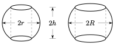
Which 11 A good question to ask to distract your parents from the fact you are serving frozen burritos. ring has more wood in it?
Solution: We'll compute the volume of the napkin ring with radius \(R\text{.}\) We can then obtain the volume of the napkin ring of radius \(r\text{,}\) by just replacing \(R \mapsto r\) in the result.
-
To compute the volume of the napkin ring of radius \(R\text{,}\) we slice it up into thin horizontal “pancakes”. Here is a sketch of the part of the napkin ring in the first octant showing a typical pancake.
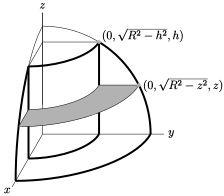 -
The coordinates of the two points marked in the \(yz\)-plane of that figure are found by remembering that
- the equation of the sphere is \(x^2+y^2+z^2=R^2\text{.}\)
- The two points have \(y \gt 0\) and are in the \(yz\)-plane, so that \(x=0\) for them. So \(y=\sqrt{R^2-z^2}\text{.}\)
- In particular, at the top of the napkin ring \(z=h\text{,}\) so that \(y=\sqrt{R^2-h^2}\text{.}\)
-
The pancake at height \(z\text{,}\) shown in the sketch, is a “washer” — a circular disk with a circular hole cut in its center.
- The outer radius of the washer is \(\sqrt{R^2-z^2}\) and
- the inner radius of the washer is \(\sqrt{R^2-h^2}\text{.}\) So the
- cross-sectional area of the washer is\begin{gather*} \pi\big(\sqrt{R^2-z^2}\,\big)^2-\pi\big(\sqrt{R^2-h^2}\,\big)^2 =\pi(h^2-z^2) \end{gather*}
-
The pancake at height \(z\)
- has thickness \(dz\) and
- cross-sectional area \(\pi(h^2-z^2)\) and hence
- volume \(\pi(h^2-z^2)\dee{z}\text{.}\)
- Since \(z\) runs from \(-h\) to \(+h\text{,}\) the total volume of wood in the napkin ring of radius \(R\) is\begin{align*} \int_{-h}^h \pi(h^2-z^2)\dee{z} &=\pi\Big[h^2z-\frac{z^3}{3}\Big]_{-h}^h\\ &=\pi\Big[\Big(h^3-\frac{h^3}{3}\Big) -\Big((-h)^3-\frac{(-h)^3}{3}\Big)\Big]\\ &=\pi\Big[\frac{2}{3}h^3-\frac{2}{3}\big(-h\big)^3\Big]\\ &=\frac{4\pi}{3}h^3 \end{align*}
This volume is independent of \(R\text{.}\) Hence the napkin ring of radius \(r\) contains precisely the same volume of wood as the napkin ring of radius \(R\text{!}\)
Example 1.6.8 Notch
A \(45^\circ\) notch is cut to the centre of a cylindrical log having radius \(20\)cm. One plane face of the notch is perpendicular to the axis of the log. See the sketch below. What volume of wood was removed?
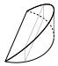
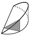
Solution: We show two solutions to this problem which are of comparable difficulty. The difference lies in the shape of the pancakes we use to slice up the volume. In solution 1 we cut rectangular pancakes parallel to the \(yz\)-plane and in solution 2 we slice triangular pancakes parallel to the \(xz\)-plane.
Solution 1:
- Concentrate on the notch. Rotate it around so that the plane face lies in the \(xy\)-plane.
-
Then slice the notch into vertical rectangles (parallel to the \(yz\)-plane) as in the figure on the left below.
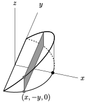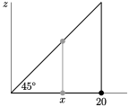 -
The cylindrical log had radius \(20\)cm. So the circular part of the boundary of the base of the notch has equation \(x^2+y^2=20^2\text{.}\) (We're putting the origin of the \(xy\)-plane at the centre of the circle.) If our coordinate system is such that \(x\) is constant on each slice, then
- the base of the slice is the line segment from \((x,-y,0)\) to \((x,+y,0)\) where \(y=\sqrt{20^2-x^2}\) so that
- the slice has width \(2y=2\sqrt{20^2-x^2}\) and
- height \(x\) (since the upper face of the notch is at \(45^\circ\) to the base — see the side view sketched in the figure on the right above).
- So the slice has cross-sectional area \(2x\sqrt{20^2-x^2}\text{.}\)
- On the base of the notch \(x\) runs from \(0\) to \(20\) so the volume of the notch is\begin{align*} V&=\int_0^{20}2x\sqrt{20^2-x^2}\dee{x}\\ \end{align*}
Make the change of variables \(u=20^2-x^2\) (don't forget to change \(\dee{x} \rightarrow -\frac{1}{2x}\dee{u}\)):
\begin{align*} V&=\int_{20^2}^{0}-\sqrt{u}\,\dee{u}\\ &=\left[-\frac{u^{3/2}}{3/2}\right]_{20^2}^0\\ &= \frac{2}{3}20^3=\frac{16,000}{3} \end{align*}
Solution 2:
- Concentrate of the notch. Rotate it around so that its base lies in the \(xy\)-plane with the skinny edge along the \(y\)-axis.
-
Slice the notch into triangles parallel to the \(xz\)-plane as in the figure on the left below. In the figure below, the triangle happens to lie in a plane where \(y\) is negative.
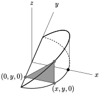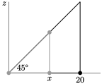 -
The cylindrical log had radius \(20\)cm. So the circular part of the boundary of the base of the notch has equation \(x^2+y^2=20^2\text{.}\) Our coordinate system is such that \(y\) is constant on each slice, so that
- the base of the triangle is the line segment from \((0,y,0)\) to \((x,y,0)\) where \(x=\sqrt{20^2-y^2}\) so that
- the triangle has base \(x=\sqrt{20^2-y^2}\) and
- height \(x=\sqrt{20^2-y^2}\) (since the upper face of the notch is at \(45^\circ\) to the base — see the side view sketched in the figure on the right above).
- So the slice has cross-sectional area \(\half\big(\sqrt{20^2-y^2}\big)^2\text{.}\)
- On the base of the notch \(y\) runs from \(-20\) to \(20\text{,}\) so the volume of the notch is\begin{align*} V&=\half\int_{-20}^{20}(20^2-y^2)\dee{y}\\ &=\int_0^{20} (20^2-y^2)\dee{y}\\ &=\Big[20^2y-\frac{y^3}{3}\Big]_0^{20}\\ &=\frac{2}{3}20^3=\frac{16,000}{3} \end{align*}